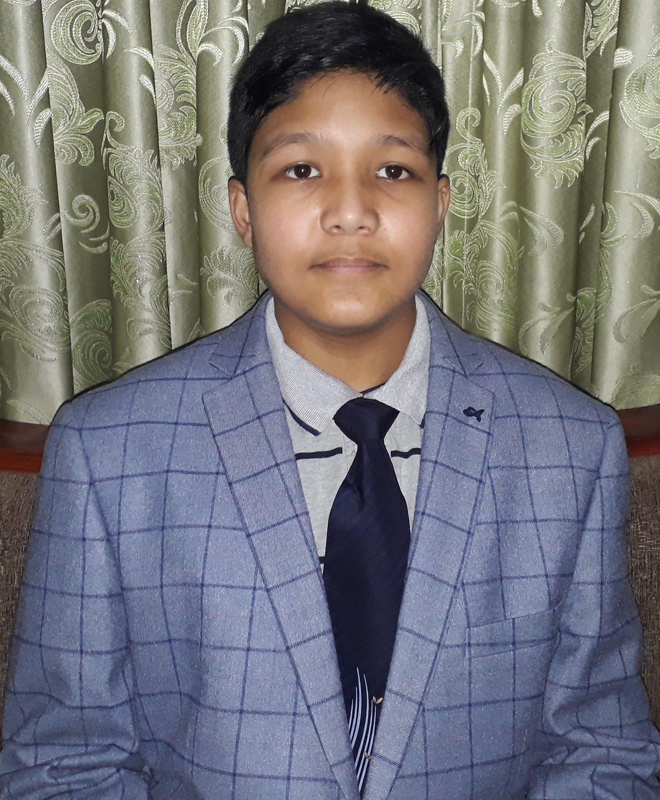

CHIRANJEEVEE POKHREL
Chiranjeevee Pokhrel is the teacher willing to learn from and teach to students, and is helping to create and help you all to perform fair election of the qualified cantidate.
Mr Chiranjeevee Pokhrel is also the official founder of VIC CODING CLUB.
IMRAUN SHARMA
Imraun Sharma is a very bright student of Grade 8 and also the co-founder of the VIC CODING CLUB. He is the Sr. Instructor of the HTML, CSS and JavaScript sections and also the graphic designing section.
VINAYAK KOIRALA
Vinayak Koirala is a student of Grade 8. He is also the co founder of the VIC CODING CLUB. He is a friend and collegue of Imraun Sharma. He is the Sr. Instructor of the PHP section and also the account and database management section.
